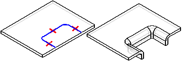
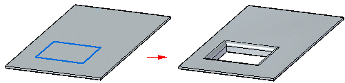
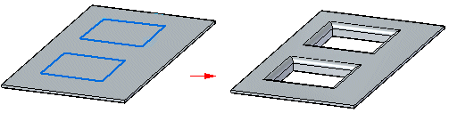
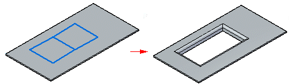
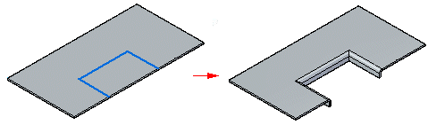
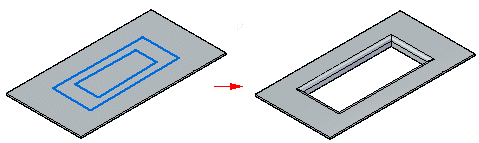

Drawn Cutout command
Constructs a drawn cutout.
In the ordered environment, if you use an open profile, the open ends of the profile must theoretically intersect part edges. A closed profile cannot touch any part edges. Drawn cutouts cannot be flattened.

In the synchronous environment, the geometry used to create the cutout can be a closed internal profile that creates a region or an open profile extended to a part edge to create a closed region.
In the synchronous environment, regions that are valid for drawn cutouts are:
-
Single

-
Disjoint

-
Contiguous

-
Coincident to a sketch or edge

-
Nested contiguous

You can select multiple regions at one time and the regions must all lie on the same plane.